比万历皇帝定陵地宫还大的藩王墓——禹州周定王墓
周定王陵
朱橚（1361年-1425年）。明太祖朱元璋第五子，明成祖朱棣的胞弟，洪武三年封吴王，洪武十一年改封为周王，十四年就藩开封。洪武二十二年冬，因擅自离开封地到凤阳秘密会见岳父冯胜而获罪，被太祖下令迁往云南。洪武二十四年底获准回到开封。此后三十余年间，组织编著有《保生余录》、《袖珍方》、《普济方》和《救荒本草》等作品，对我国医药事业的发展做出了巨大的贡献。朱橚于洪武十四年就藩于开封，王府设在北宋故宫，因其封国为周，谥号为定，故称周定王。
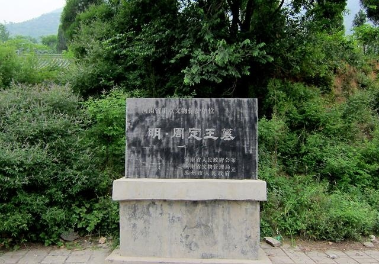周定王陵
周定王墓在禹州市无梁镇老山坪东麓，陵墓建于1404年，1414年建成。其陵墓坐西向东，是一处由砖、石建成的规模宏大、气势雄伟的地下宫殿建筑群，被专家们誉为十三陵的缩影。墓室凿山起券，由甬道及前后及配殿组成，纵长约40、宽34米，总面积1970平方米。前殿长12.33、宽9.58米，左右各为两配殿，寝殿长9.57、宽25.7、高15米。
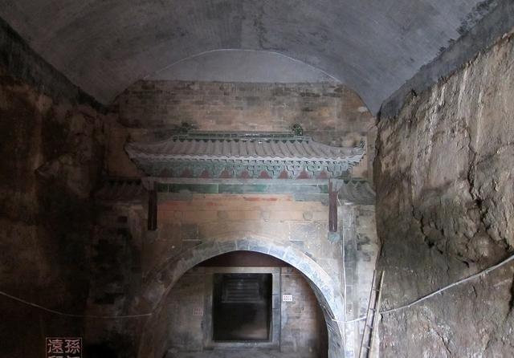
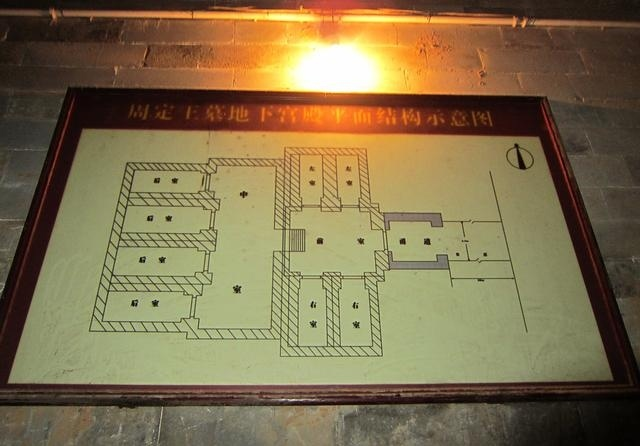
周定王墓发现于１９３８年，当时王家村一个叫乔黑的老汉在山坡前犁地，牛的一条腿蹬进一个窟窿，把牛腿拔出来后，乔老汉将牛鞭杆儿伸进窟窿里，竟伸不到底儿，乔老汉就找来村里的年轻人，将洞一点点挖开，原来是个墓门。乔老汉犁的地，其实就是周定王墓前甬道。于是这里吸引来十里八乡的人看热闹。人们小心翼翼打开一个个石门，走进墓的大殿，看到了墓室上方的盗洞，不知何年何月，什么时候，周定王墓已被人盗过，而村里人此前竟没有察觉。
１９５８年，当时的禹县县委书记听传说墓里有河，就把墓打开，想用里面的水浇地。于是，就动用８０个劳教人员扒开了墓道，谁知道，里面仅有很少的水，根本不能浇地用。既然打开了，干脆让人们参观吧，有人看时就卖票。
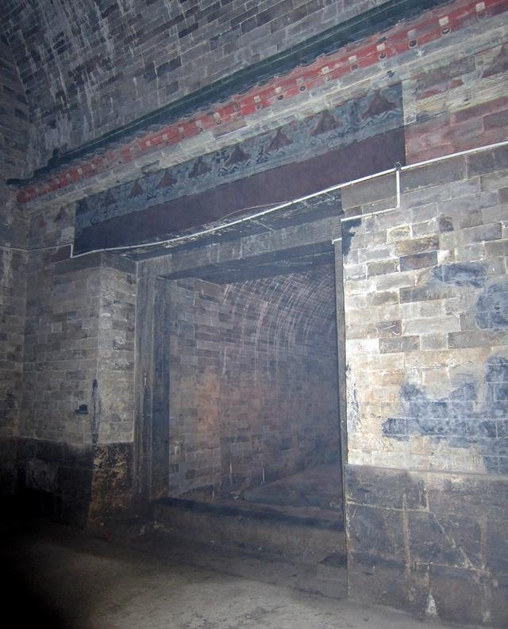
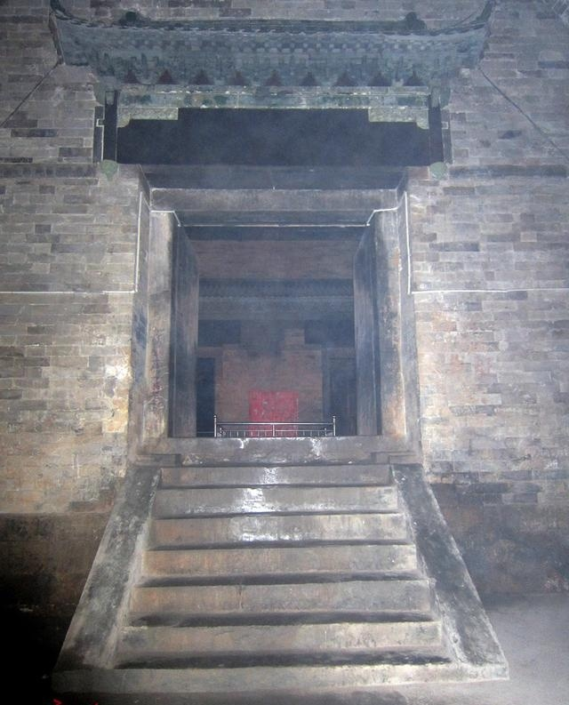
地宫内非常潮湿，到处弥漫着水雾，朦朦胧胧中给古墓平添了几分神秘。

复制的棺椁
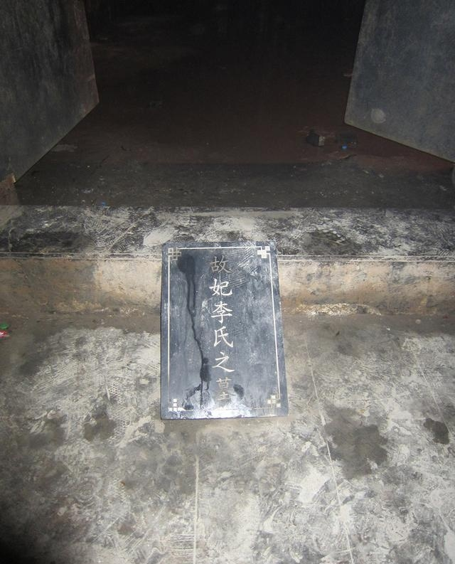李妃墓碑
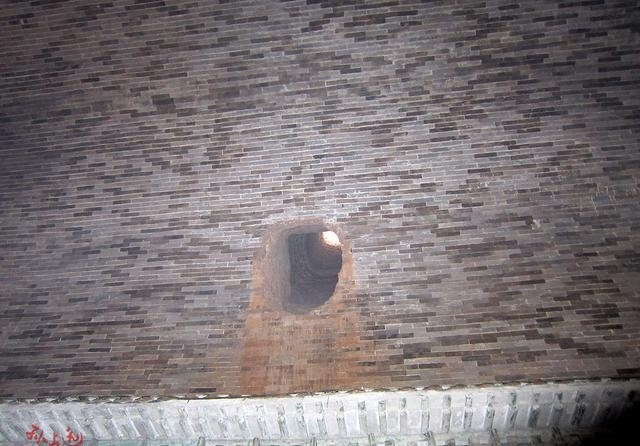位于棺椁上方的古代盗洞
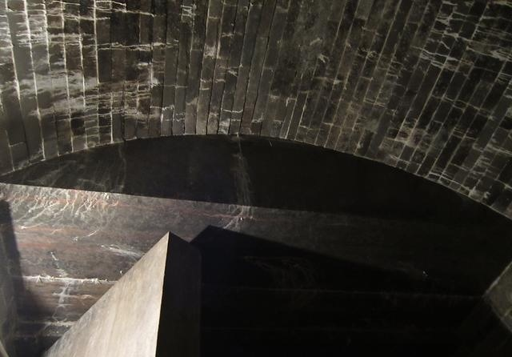打磨光滑的建筑石料
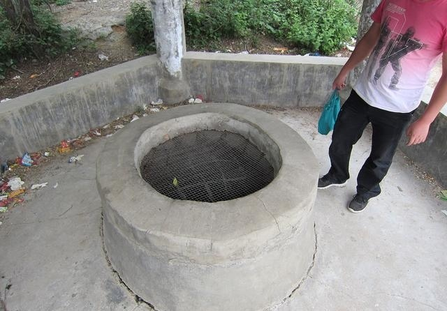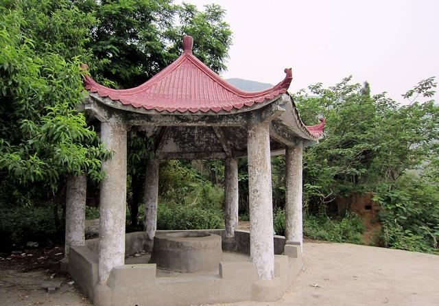
顶部盗洞
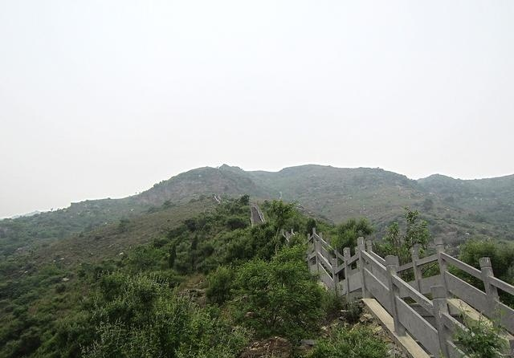周定王墓上面的登山台阶
周定王墓已经于2013年批准为第七批全国重点文物保护单位。周定王墓现在属于半开放景点，宣传力度不大，收费低廉，有想一睹明朝藩王大墓风采的朋友可以前往参观。